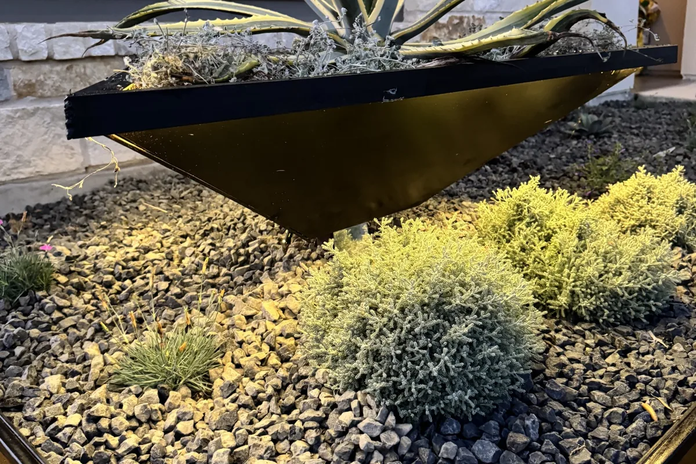
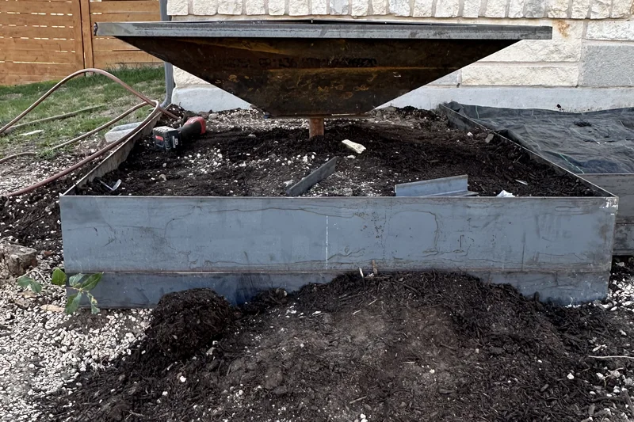
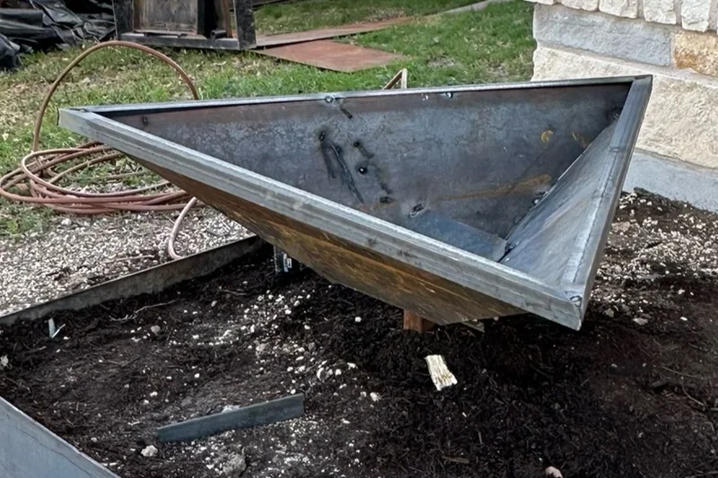
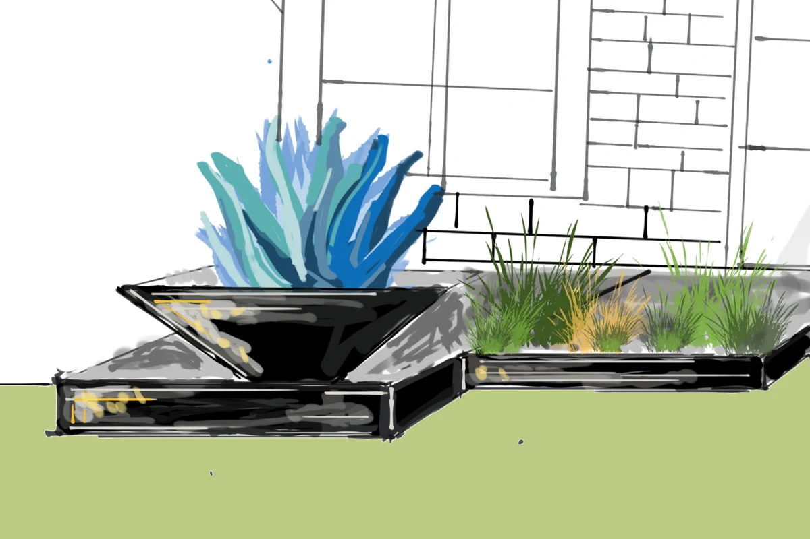
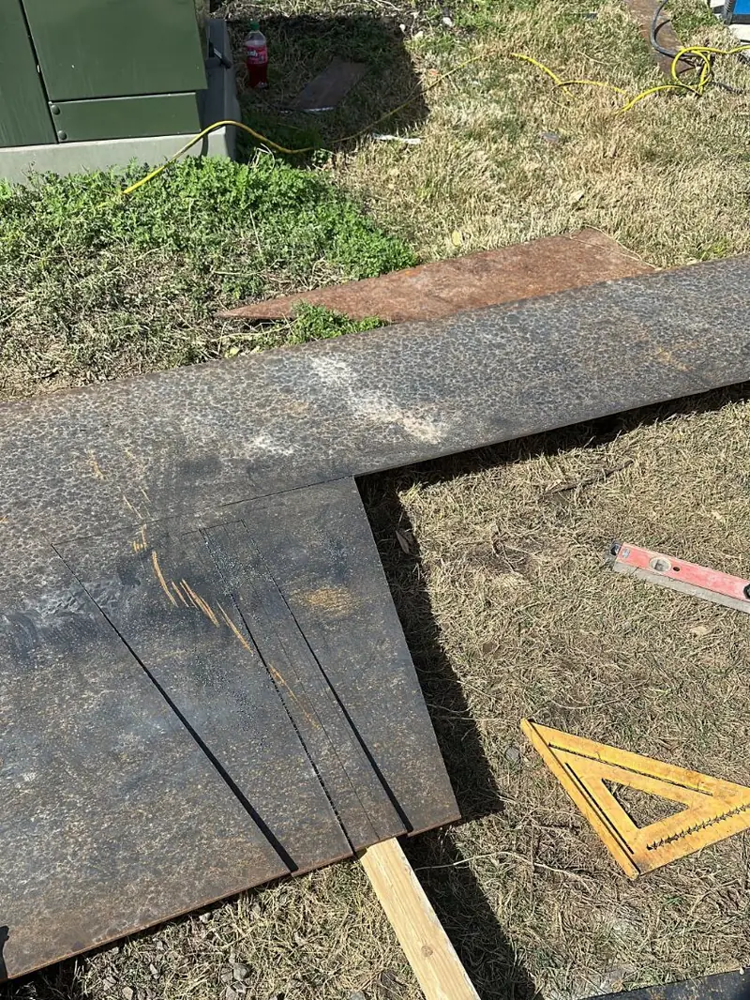
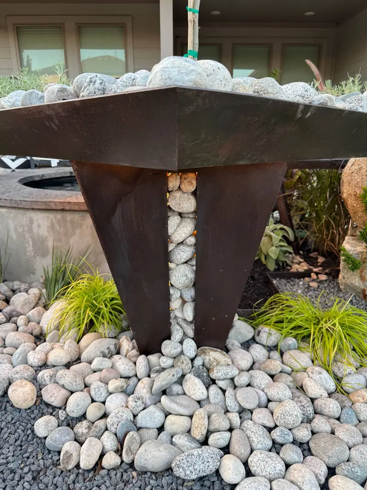

A tapered steel planter is wide at the rim and narrow at the base, and Red Agave Landscape builds them from flat steel plate, welded at every seam. In Southeast Austin we built one as a triangle: three plates that narrow from a steel rim to a single point. This post covers how that shape is made, how much soil it holds, and when a taper is a better choice than a box.

What Is a Tapered Planter?
A planter whose sides lean in, so the base is smaller than the rim. A box planter has straight sides and the same footprint at the top and the bottom. A tapered planter gets narrower as it goes down.
We have built the taper two ways.
- Tapered to a point: the sides keep narrowing until they meet. That is our triangle planter in Southeast Austin.
- Tapered base: a tray sits on a base that narrows toward the ground. That is a square planter in another Southeast Austin yard, shown further down.
How Is a Tapered Triangle Planter Built?
From three flat steel plates.
- Three plates: each one is a triangle, wide at the top and pointed at the bottom
- Three seams: the plates meet edge to edge, and each seam runs from a corner of the rim down to the point
- One rim: a band of steel welded around the top edge
- One post: the point sits on a single post
On a box, every corner is square. On this planter the plates lean outward, so every seam is an open angle, wider than a square corner. We fully weld every seam.
Our June build photos show the planter in bare steel. From the side you see the taper. From above you see inside it: the three plates, the rim, and the weld marks.


The finished planter is black. For the full build, from the sketch to the finished front yard, see our post on the floating triangle planter.
How Much Soil Does a Tapered Planter Hold?
Less than a box, and the difference is exact. A planter that tapers to a point holds one third of the soil of a straight-sided planter with the same rim and the same depth. That is the geometry of a pyramid.
It matters in two ways.
- Weight: less soil is less weight on the post
- Planting: the soil is deepest in the middle and shallow at the edges, so the planter suits one plant set at the center
We planted one variegated agave in the middle of ours.
Why Does an Agave Suit a Tapered Planter?
Because an agave asks for sun and drainage first. The UC Master Gardener Program of Sonoma County states that almost all agaves need full sun, at least six hours of direct sunlight. It also states that agaves tolerate poor soils, and that soil with good drainage is essential.
The same source notes that agaves in containers need periodic water in summer. A planter is not a reason to stop watering. Source: UC Master Gardener Program of Sonoma County, Agave.
Every Red Agave planter includes drainage. An agave also holds its shape all year, so the planter looks finished in every season.
See our guide to cold-hardy agaves for Central Texas and our post on the artichoke agave.
Why Taper a Planter at All?
Three reasons, and you can see all three in Southeast Austin.
- It opens the ground: the bed under the planter stays open, and rock and plants run right under it
- It shows the underside: the sloped faces are in view from the lawn, and a light under the planter shines on the rock
- It looks light: a wide rim over a small base reads lighter than a box of the same width
The sketch shows the same taper: a planter drawn wide at the rim and narrow where it meets the bed.

More of our drawings are on the design plans page.
Where Else Do We Taper Steel?
On a planter base. In another Southeast Austin yard we built a square steel planter on a tapered base. A square tray sits on a base that narrows toward the ground. We cut the pieces from steel plate and welded them on site.
The base has an open slot. The slot is packed with river rock and lit from inside, so at night the base glows.


See the Southeast Austin water feature, where that planter stands.
Should You Choose a Tapered Planter or a Box?
Choose by the plant.
- Tapered: one specimen plant, such as an agave, set at the center where the soil is deepest
- Box: grasses, a hedge, or several plants in a row, which need soil along the full length
Our custom steel planters page lists box sizes and the steel gauge for each. For more shapes, see our steel planter ideas.
Every Red Agave project starts with a free consultation, and the CAD plan is included.
Questions We Hear
What is a tapered planter?
A planter whose sides lean in, so the base is smaller than the rim. Ours in Southeast Austin is a steel triangle that tapers all the way to a point.
How is a tapered steel planter made?
From flat steel plate. Our triangle planter is three triangular plates welded along three seams, with a steel rim welded around the top edge.
Does a tapered planter hold less soil than a box?
Yes. A planter that tapers to a point holds one third of the soil of a straight-sided planter with the same rim and the same depth.
What grows well in a tapered planter?
One specimen plant set at the center, where the soil is deepest. We planted a variegated agave. Agaves need full sun and soil with good drainage.
Can a tapered planter be lit?
Yes. A light under our triangle planter shines on the rock below it, and the tapered base of our square planter is lit from inside.